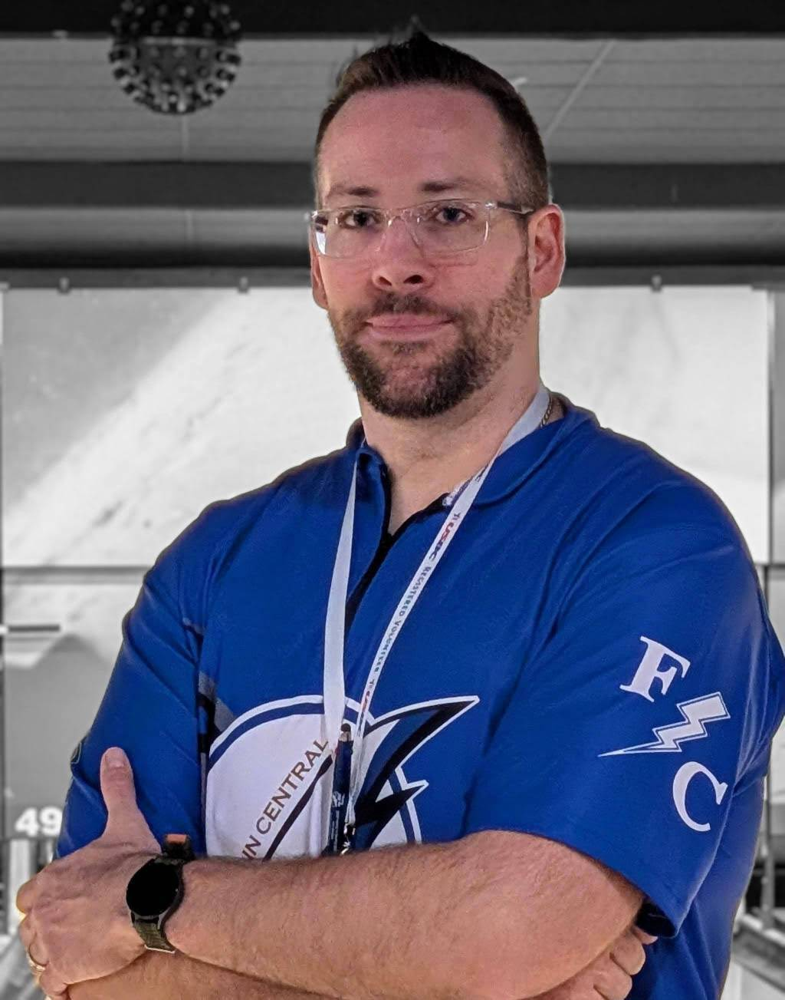

USBC-certified coaches dedicated to developing bowlers of all skill levels. With a combined passion for the sport and proven track records, we're here to help you achieve your goals.
Head Coach & Founder
With a lifelong passion for bowling and USBC Silver Level certification, Coach Rice brings years of practical coaching experience to every session. Specializing in personalized coaching tailored to each bowler's unique style and goals, from beginners to competitive players.

Coach & Co-Founder
A seasoned and accomplished coach, Rob Pero, Jr. has an extensive background in youth bowling. He served as the former head coach of the Southport High School Boys Bowling Team and currently leads the Franklin Central Girls Bowling Team as the Head Coach and Program Lead. Rob is actively involved in several bowling programs, including Expo SMYL, Junior Masters, IMSB, and offers individual lessons as a Bronze Level Certified Coach. Recently, he was appointed as the IHSB Indianapolis East Conference Coordinator, reflecting his leadership and expertise in the sport. Beyond coaching, Rob is deeply committed to promoting youth bowling through a strong social media and web presence, helping to grow the sport and engage the community.
Work with our award-winning coaches to reach your full potential on the lanes.
Contact Us Today